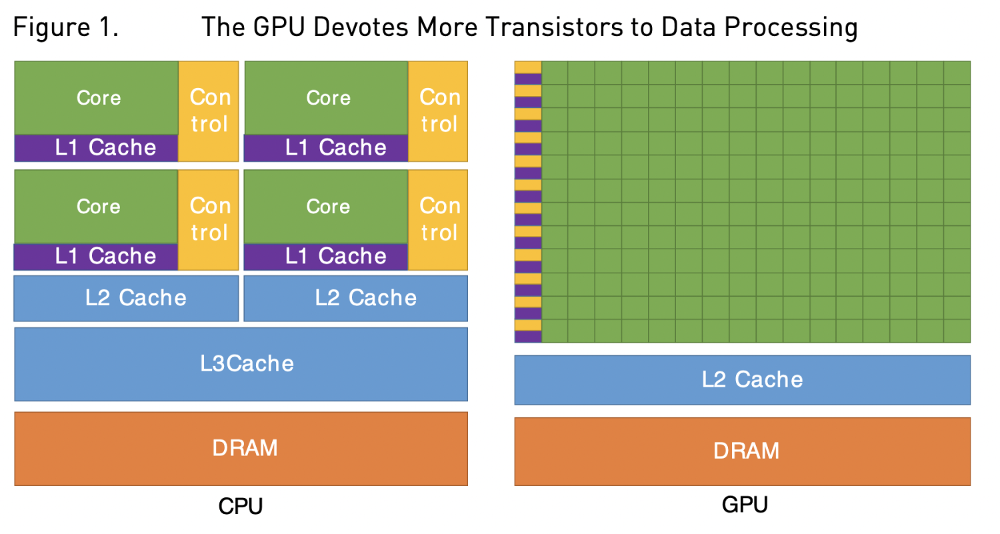
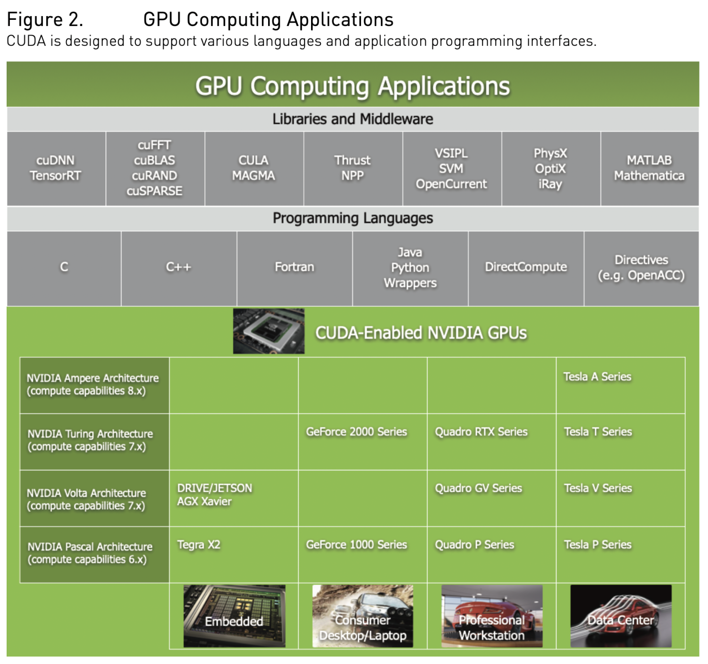
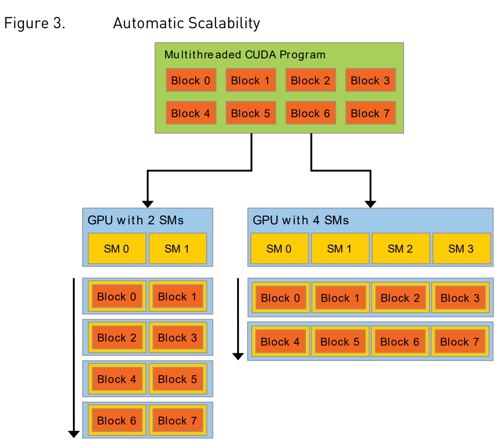

《CUDA C Programing Guide》读书笔记1——整体介绍
从事异构计算领域三年时间，却没有系统的读过GPU相关的基础文档和书籍，以至于基础不牢，很多东西写了又忘，《CUDA C Programing Guide》是NV官方提供的CUDA指导文档，从头复习一遍，边读边翻译，记录一下。
1.1 使用GPU的好处
GPU在同等价格和功耗条件下提供了比CPU高得多的指令吞吐量(Instruction throughtput) 和 内存带宽(memory bandwidth) 。得益于此，应用可以在GPU上运行的比CPU更快。其他计算设备如FPGA，尽管能效也很好，但是编程灵活性远低于GPU。
GPU和CPU的能力差异是因为它们的设计目标不同。CPU的设计是为了尽可能快的执行一系列操作（每个操作的单位是线程），并且允许并行的执行几十个这样的线程。而GPU的设计是擅长执行数千个这样的线程。（为了更大的吞吐量，代价是单个线程的性能会慢些）。
GPU是专门用于高度并行的计算任务的。因此在 设计时有更多的晶体管被用于数据计算(data processing)而不是数据缓存(data caching)和控制流(flow control)。图1是CPU和GPU的芯片资源分布示意图。

将更多的晶体管用于数据计算过程（如浮点计算）有益于高度并行计算。GPU可以通过计算隐藏内存访问延迟，而不是依靠大量数据缓存和复杂流程控制来避免内存访问延迟。（数据缓存和流控制设计都需要大量的晶体管来实现，成本昂贵）
通常，一个应用程序既有可以并行的部分，也有需要串行执行的部分，因此系统在设计时混用CPU和GPU可以最大化发挥整体性能。具有高度并行性的应用程序可以利用GPU这种并行特性来获得比CPU上运行时更高的性能。
1.2 CUDA：通用的并行计算平台和编程模型
2006年11月，NVIDIA推出了通用的并行计算平台和编程模型 CUDA。它可以利用NVIDIA GPU中的并行计算引擎，比CPU更高效的方式来解决许多复杂的计算问题。
CUDA提供了一个软件环境，允许开发人员使用C++编写程序。同时也支持Fortran、DirectCompute、OpenACC等其他的编程方式。

1.3 可扩展的编程模型
多核CPU (multicore CPUs) 和多核GPU(manycore GPUs)的出现意味着现在主流处理器芯片都是并行系统。这带来了一个挑战是如何像写普通程序一样的编写并行程序，无感的扩展其并行性，使其能利用更多的处理器核，就像3D图形程序那样。
CUDA编程模型旨在克服这一挑战，同时也能给熟悉C这样的标准编程语言的程序员较低的学习曲线。
它向程序员提供了一组最小的语言扩展，核心是三个关键抽象：线程组的层次结构、共享内存和屏障同步(barrier synchronization) 。
这些抽象提供了粗粒度的数据并行和任务并行和细粒度的数据并行和线程并行。它指导程序员将问题分解为一些可以被线程块(blocks of threads)独立执行和并行执行的子问题，每个子问题可以进一步分解为由块内的所有线程协同并行解决的更细的部分。
my notes：注意这两个粒度划分的思想。不同的线程块独立且并行的执行，而线程块内部的线程间可以并行执行也可以协作完成一个子问题。
这种问题分解的思路即保证了代码的可读性 （允许block内的线程协作完成一个子任务），同时也实现了并行的自动伸缩性（线程块独立并行执行子任务）。事实上，每个线程块可以以任何顺序（无论是并行的还是串行的）被调度在GPU内的任意可用的多处理器(multiprocessor)上。因此编译后的CUDA程序可以在任何数量的多处理器上执行（如图3所示），只有运行时系统需要知道物理的多处理器的数量。

notes: GPU是围绕着一组流式多处理器（SM）阵列建立的（更多细节见Chapter.4 硬件实现）。一个多线程程序被划分为独立执行的线程块，因此，拥有更多multiprocessor的GPU执行程序的时间比拥有较少multiprocessors的GPU要短。
my notes: 关于Automatic Scalability还要再理解一下
这种可扩展的编程模型通过简单的扩展multiprocessor和memory partitions的数量，可以覆盖广阔的市场范围：从高性能计算GeForce GPU、专业Quadro和Tesla计算产品 到 各种便宜的主流GeForce GPU（参见支持CUDA的GPU列表）。